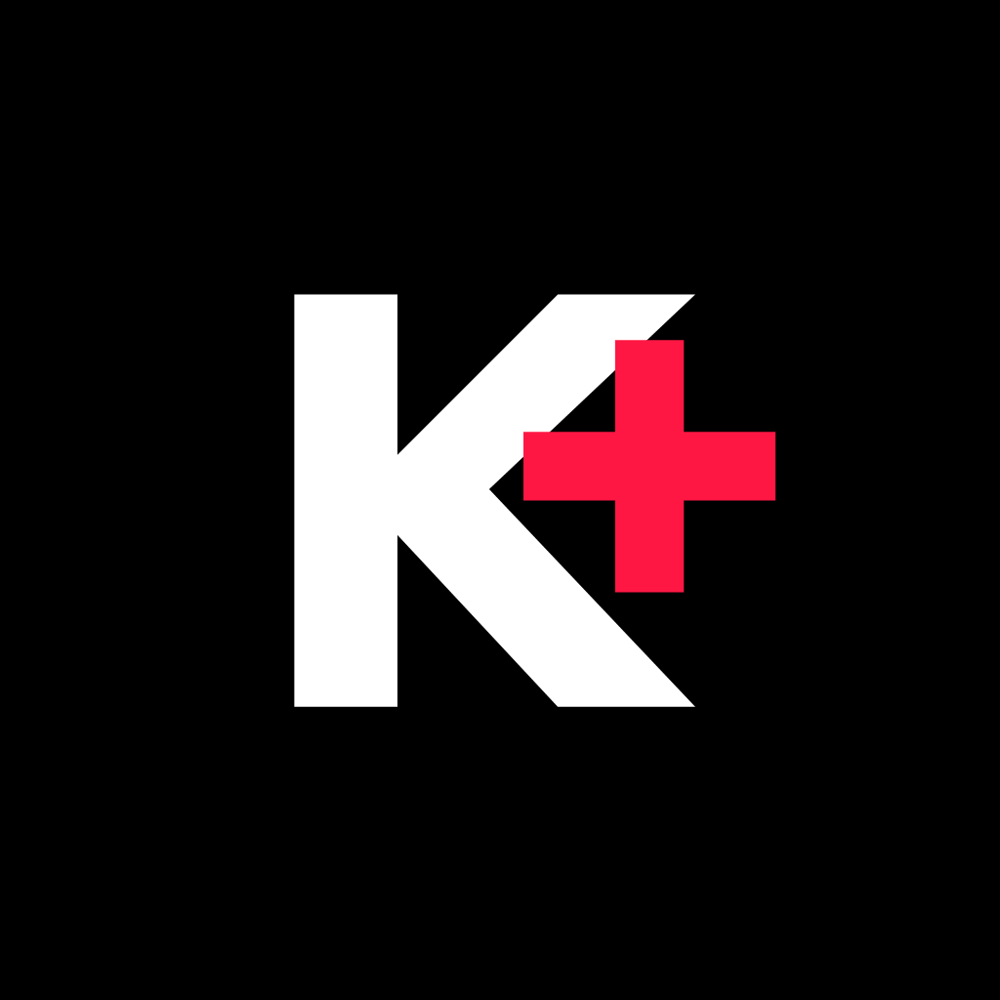
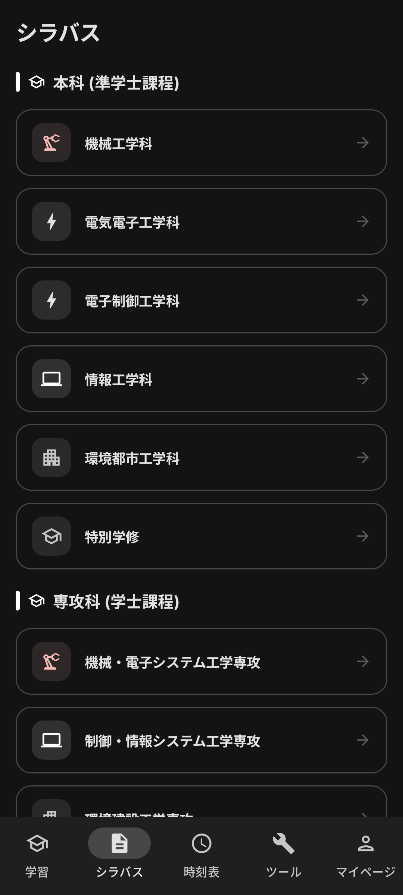
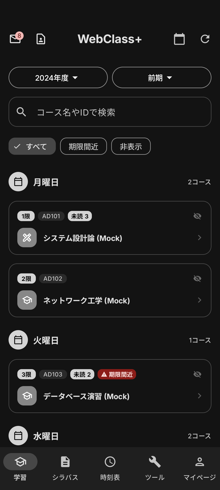
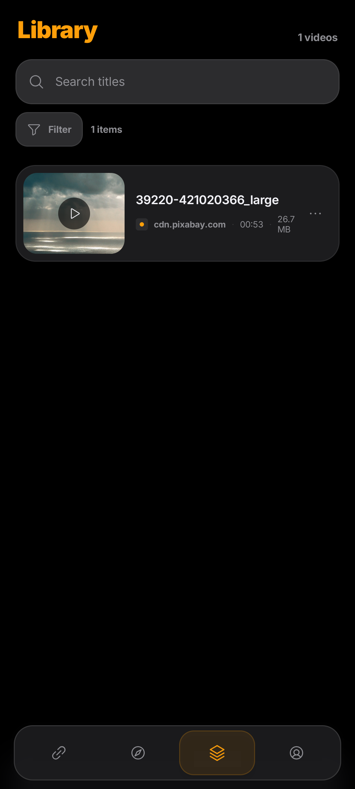
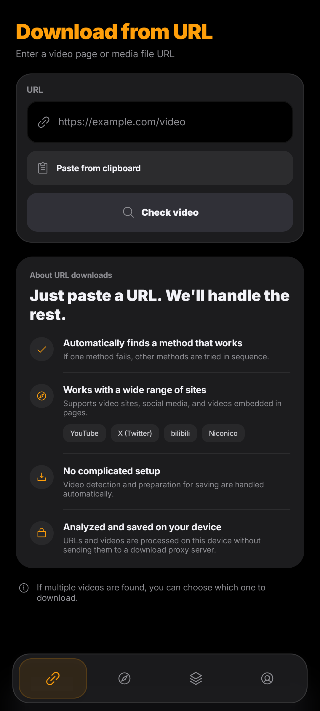

01 / 02

Kosen+
高専生活に必要な情報と道具を、ひとつのアプリに。
WebClass、シラバス、時刻表、学習ツールを整理。授業前から放課後までを自然につなぐ、木更津高専向けモバイルアプリです。
- ANDROID
- iOS
- KOTLIN
- SWIFTUI
ANDROID 8.0+ / iOS
LEARN


INAHO TECH
Inaho Techは、日常にある小さな摩擦を見つめ、使う人の手元で、静かに役立つソフトウェアを設計します。
INAHO TECHについて
Inaho Techがつくるのは、機能ではなく、迷わない体験です。
必要なものを、必要な場所に。複雑さを引き受け、体験をシンプルにする。それがInaho Techのものづくりです。
選ばれたプロジェクト

高専生活に必要な情報と道具を、ひとつのアプリに。
WebClass、シラバス、時刻表、学習ツールを整理。授業前から放課後までを自然につなぐ、木更津高専向けモバイルアプリです。
ANDROID 8.0+ / iOS


プライバシーを、設計の中心に。
動画の検出・処理を端末上で完結。アカウントも広告も解析SDKも持たない、Android向けオープンソースアプリです。
ANDROID 8.0+


つくるときの原則
仕様より先に、使う場面を見る。解くべき摩擦を正しく選びます。
技術の難しさはプロダクトが引き受け、利用者には明快な体験を届けます。
プライバシー、透明性、責任ある選択を最初から組み込みます。